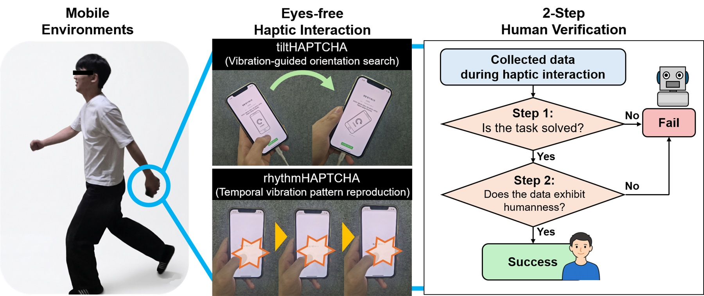

Keeping multiple tactile targets distinct
STO balances directional fidelity with perceptual separation so multiple simultaneous targets remain distinguishable on the torso.
Haptics · Human–Computer Interaction
Ph.D. Candidate · Computer Science and Engineering · POSTECH
I study how sensory feedback shapes what we feel and how we interact.
My research connects perceptual experiments with haptic rendering and interactive systems. I investigate how sensory cues combine, which distinctions people can perceive, and what these insights mean for interface design.
I am advised by Prof. Seungmoon Choi at POSTECH. I am also a Visiting Graduate Researcher with Prof. Oliver Schneider at the University of Waterloo (June–November 2026), working on user intent estimation and haptic rendering for robotic shared control.
Ph.D. expected February 2027. Seeking postdoctoral opportunities, with a preference to join as soon as possible after graduation.
Experiments, prototypes, and interactive systems.
Published work and current manuscripts under review.
13 projects
STO balances directional fidelity with perceptual separation so multiple simultaneous targets remain distinguishable on the torso.

A head-mounted system examines tactile, bone-conducted, and air-conducted cues, connecting sensory interaction with spatial and semantic tasks.

Text and synchronized vibration reshape short music previews. PRISM separates experiential value and exploration from decision accuracy.

Measuring perceptual tolerance to spatial misalignment and using it to inform directional cueing with a sparse tactile array.

A foot-worn interface uses body-penetrating phantom sensations to investigate a vibrotactile metaphor of physical contact.

A cable-driven force-feedback exhibit brings a virtual lever to life and is evaluated alongside a physical science-museum exhibit.

Mobile haptic challenges combine spatial search and rhythm reproduction with evaluation of security and usability during movement.

Characterizing the relationship between contact force, vibration parameters, body location, and perceived intensity.

Coordinated sound and vibration investigate realism, direction, and user experience in body-penetrating phantom sensations.

Embodied and tangible interactions connect a virtual introduction with hands-on exploration of an existing science-museum exhibit.

Studying physiological responses, task performance, and subjective experience across four body placements.

A participatory design approach and seat-based haptic platform explore vibrotactile warnings for driving contexts.

A collaborative analysis of social touch considers the situations and meanings around physical contact.
Research direction
I use an understanding of perception to decide how an interface should deliver feedback: which cues should form a coherent experience, which need to remain distinguishable, and how that experience changes a person's actions and decisions.
Looking ahead, I am interested in interfaces that work with the body's sensory and motor processes, letting people explore and adjust sensory experiences during natural action.
I welcome conversations about postdoctoral opportunities and collaborations.